Tópico 1: Identificação e Caracterização Pessoal; Localização no Tempo e no Espaço
3.1 How to get there
Rosa foi ao encontro de sua amiga Christine no pub onde Dube, o namorado da amiga, trabalha. É lá que a turma de colegas costuma se reunir. Entretanto, apesar de o pub não ser muito longe da Columbus College, Rosa ainda não está familiarizada com a cidade de Chicago, por isso precisa pedir informações. Acompanhe:
Rosa: Excuse me...
Old lady: Can I help you?
Rosa: Yes, please. What’s the way to The Night Pub? It’s a pub on Pine Street, between Birch Avenue and Willow Lane.
Old lady: Oh, yes, it’s very easy to get there. Walk along this street as far as the traffic lights. Turn right into Rosebud Street and walk two blocks. Then turn left at the bank on the corner - that’s Willow Lane. Walk another block and turn right again into Pine Street. The pub is right past the grocery store, on the right.
Rosa: I’m sorry, the bank is on the corner of Rosebud Street and Willow Lane, right?
Old lady: Yes, that’s where you turn left. Then, one more block, turn right, and the pub is next to the grocery store.
Rosa: OK, I got it. Thank you very much!
Old lady: You’re welcome!
Na conversa que você acompanhou, ao solicitar informação de como chegar ao pub para a senhora que está at the bus stop, Rosa utilizou a pergunta What’s the way to the Night Pub?. A resposta deu-se tendo como referência um local, no caso, uma grocery store. No tópico que segue você conhecerá outros estabelecimentos.
3.2 Measuring distances
Vamos aprender informações importantes sobre algumas medidas de distância?
Uma yard (jarda), no inglês americano, equivale a three feet (três pés) ou, se preferir, aproximadamente 0,91 metros. Para saber o valor de five yards, por exemplo, basta multiplicar cinco por 0,91. Cada foot (pé) equivale a 0,304 metros, aproximadamente 31 centímetros. Já uma block seria uma quadra e o tamanho de uma quadra pode variar de cidade para cidade.
3.3 Evening or night?
Evening é a parte do dia que fica entre o final da tarde e o início da noite, podendo estender-se até 21h ou 22h.
Night é a parte do dia em que o sol já se pôs: a noite.
Mas, quando você for saudar alguém nestes períodos do dia, você deve pensar em outro detalhe. Quando você estiver chegando ao lugar, a expressão a ser usada é:
Quando estiver no momento da despedida, você deve usar:
Ou seja, Good evening é “boa noite” na chegada e Good night é “boa noite” na saída.
3.3 Places in the city
A seguir você conhecerá alguns locais comerciais que pode encontrar em uma cidade.
 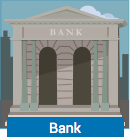
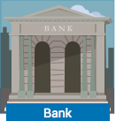
 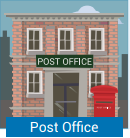
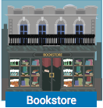
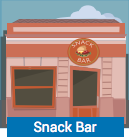
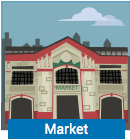
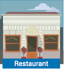
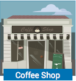
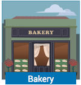
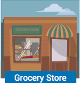
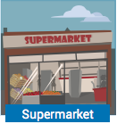
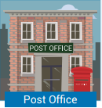
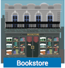
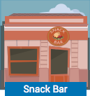
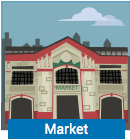
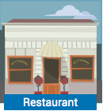
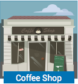
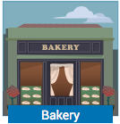
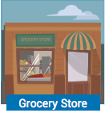
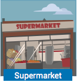
- Supermarket: supermercado
- Grocery store: mercadinho; mercearia
- Bakery: padaria
- Cafeteria / coffee shop: cafeteria
- Restaurant: restaurante
- Market: mercado
- Drugstore: farmácia
- Snack bar: lancheria
- Bookstore: livraria
- Post office: correio
- Bar / pub: bar
- Bank: banco
- Newsstand: banca de revista
- Clothes store: loja de roupas
- Shoe store: loja de sapatos
- Department store: loja de departamentos
- Computer shop: loja de computadores/ informática
- Hairdressers: cabeleireiro(a)
- DVD rental shop: locadora de DVDs
- Office: escritório
Existem ainda outros locais que não são comerciais, mas úteis para localizar-se em uma cidade. Veja como eles se chamam:
- School: escola
- College: faculdade
- Library: biblioteca
- Hospital: hospital
- Emergency room/ ER: pronto-socorro
- Church: igreja
- Cathedral: catedral
- Taxi stand (AmE)/Taxi rank (BrE): ponto de táxi
- Bus stop: parada de ônibus
- Bus station: estação rodoviária
- Train station: estação de trem
- Subway station: estação de metrô
- Airport: aeroporto
- Movie theather (AmE)/ cinema (BrE): cinema
- Theater: teatro
- Police station: delegacia
Com este conteúdo é possível que você consiga reconhecer alguns locais na cidade. Com a utilização de algumas question words será possível perguntar sobre a localização destes estabelecimentos.
3.4 Question words
No diálogo que você acompanhou no início da aula, Rosa dirigiu-se a uma pessoa na rua para saber como chegar ao pub. Para obter a informação, ela utilizou a frase:
What’s the way to...?
Com essa pergunta - que significa Qual o caminho para...? -, você obtém instruções sobre como chegar a um local: que ruas tomar, onde dobrar, por quantas quadras andar. É diferente de perguntar Where’s...? que, por significar onde fica...?, indica que você está perguntando qual o endereço de um local e não como chegar lá.
No caso de Rosa, se ela tivesse perguntado Where’s The Night Pub?, teria obtido como resposta It’s at 324 Pine Street e não todas aquelas orientações necessárias para que de fato ela chegasse lá.
Como você pôde ver, saber escolher qual a question word a ser utilizada é fundamental para você conseguir obter a exata informação que deseja.
Não basta, entretanto, apenas obter a informação quanto ao local. Além dela, é preciso entender em que ponto de uma rua ele está localizado. Nesse caso, você necessitará conhecer como expressar localizações. Portanto a seguir veja algumas prepositions e expressions of place.
3.5 Prepositions and expressions of place
Três preposições são frequentemente utilizadas para expressar posição em inglês: in, on e at.
In significa dentro de ou em, mas a ideia expressa por essa preposição é de que aquilo a que nos referimos está contido dentro de um espaço limitado, por exemplo, dentro de um prédio, cidade, país. Por essa razão é que, nas ilustrações a seguir, Rosa e Dube podem dizer:
A preposição at também pode ser entendida como em, mas diferentemente de in, ela estabelece uma relação com um ponto e, na maioria das vezes, nosso objeto de interesse pode não estar dentro de algo. Por exemplo, na ilustração a seguir, Rosa poderia dizer o seguinte:
Da mesma forma, quando alguém está na escola, em casa, no pub, não se pode ter certeza de que a pessoa está dentro da construção: ela pode estar no pátio, no jardim, na entrada, ou realmente dentro do prédio. Por essa razão utiliza-se a preposição at:
Já para on, o significado mais comum é sobre uma superfície, daí o tradicional exemplo:
Em relação a locais em uma cidade, considera-se que ruas são superfícies, como você pode perceber olhando a ilustração a seguir. Por isso, para dizer que o banco fica na Nicolette Boulevar usamos:
Quando um local fica em uma esquina, dizemos on the corner (of...), como na frase a seguir.
Para referir-se à próxima esquina, pode-se dizer:
Observe novamente a ilustração anterior em que o banco está situado on Nicolette Boulevard. Seguindo o mesmo raciocínio, se um prédio fica à esquerda ou à direita em uma rua, dizemos respectivamente:
A exceção, então, fica por conta da expressão at the end of (the street) na qual temos at ao invés de on. Veja o exemplo:
Observe na tabela a seguir uma síntese das preposições vistas até agora:
Quadro 1 - PREPOSITIONS AND EXPRESSIONS OF PLACE
| In | significa dentro de ou em - aquilo a que nos referimos está contido dentro de um espaço limitado. |
|---|---|
| At | pode ser entendida como em, mas estabelece uma relação com um ponto e, na maioria das vezes, aquilo a que nos referimos pode não estar dentro de algo. |
| On | indica que algo está sobre uma superfície. |
Existem outras prepositions of place que também são importantes quando se trata de localização. Observe-as na tabela a seguir:
Quadro 2 - Preposition
| Preposition | Português |
|---|---|
| in front of | na frente de |
| opposite | em frente a |
| across | do outro lado/cruzando |
| next to | próximo a |
| beside | ao lado de |
| between | entre (refere-se a algo posicionado entre duas coisas) |
| above | acima de |
| under | embaixo |
| past | passando/depois de |
| near | perto de/próximo a |
Exemplos de frases:
3.6 Days of the week
O nome dos dias da semana em inglês terminam em -day, que significa dia. Essa não é a sílaba pronunciada com mais ênfase: a sílaba tônica é, na verdade, a primeira da palavra.
Quadro 3 - Days of the week
| Days of the week | Dias da semana |
|---|---|
| Sunday (Sun.) | domingo |
| Monday (Mon.) | segunda-feira |
| Tuesday (Tue.) | terça-feira |
| Wednesday (Wed.) | quarta-feira |
| Thursday (Thur.) | quinta-feira |
| Friday (Fri.) | sexta-feira |
| Saturday (Sat.) | sábado |
Na língua inglesa, os dias da semana sempre são escritos com a letra inicial maiúscula, independentemente de virem no início, meio ou fim de frase. Dois desses dias compõem o chamado weekend: Saturday e Sunday. Além dos dias da semana, podemos usar os meses ou estações do ano para nos localizarmos no tempo. Acompanhe-os no próximo tópico.
3.7 Months of the year & seasons
Observe na tabela a seguir os nomes dos months of the year:
Quadro 4 - Months of the year
| Months of the year | Meses do ano |
|---|---|
| January (Jan.) | janeiro |
| February (Feb.) | fevereiro |
| March (Mar.) | março |
| April (Apr.) | abril |
| May (May) | maio |
| June (Jun.) | junho |
| July (Jul.) | julho |
| August (Aug.) | agosto |
| September (Sep.) | setembro |
| October (Oct.) | outubro |
| November (Nov.) | novembro |
| December (Dec.) | dezembro |
Você provavelmente percebeu que os meses do ano não são tão diferentes de como são chamados em português. Por essa razão, é preciso ter atenção ao escrevê-los para não misturar a forma escrita das duas línguas. Assim como os days of the week, os months of the year são escritos sempre com a inicial maiúscula e sua abreviatura são as três primeiras letras do nome do mês. Exceto May, que não é abreviado.
 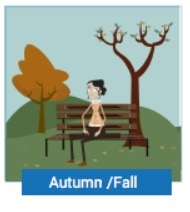
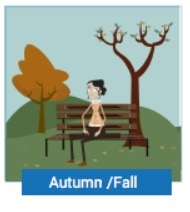
The seasons estão relacionadas aos meses do ano. Acompanhe na tabela a seguir.
Quadro 5 - Seasons
| SEASONS | MONTHS (Northern Hemisphere) | MONTHS(Southern Hemisphere) |
|---|---|---|
| spring | March April May | September October November |
| winter | December January February | June July August |
| summer | June July August | December January February |
| autumn / fall | September October November | March April May |
Diferentemente dos days of the week e dos months of the year, as seasons não precisam ser escritas com a inicial maiúscula, a não ser quando for parte de um nome, como, por exemplo, Winter Avenue.
3.8 Prepositions and expressions of time
Carlton realiza inúmeras tarefas e tem muitos compromissos, veja como ele tenta organizar sua agenda:
Carlton: OK, hmmm so, today is Tuesday… on Tuesdays and Thursdays I work at the pub at night… yes… at 7 p.m. … so today I work here long hours… pheeew… And on Wednesday night I also come to the pub… No, no, no… on Wednesday night is my night off… yes… that’s it! On Thursdays I work in the morning in the mall. Yeah… I work in the mall from Monday to Friday… no… I work in the mall from Monday to Wednesday… pheeew… I’m tired…. And this Sunday I work in the pub in the afternoon… no! Of course not! You idiot! The pub is only open in the evening and at night. Hmm… yeah... And Friday… on Fridays I… I… I work in… ah, sure! I work in the restaurant from morning to night. All day long…
Nos dias da semana, Carlton utiliza a preposição on. O que ocorre é que algumas preposições que são utilizadas para designar posição espacial também são usadas quando precisamos nos localizar temporalmente. Três delas - in, on e at - são fundamentais nesse caso. Acompanhe as situações de uso:
In - quando falamos em anos, meses e estações do ano.
On - quando falamos de dias da semana ou do mês (acompanhado da data).
At - quando falamos de horários.
Se considerarmos a duração desses intervalos de tempo, pode-se pensar em uma coluna, onde a base são os períodos maiores (séculos, décadas, anos, estações, semanas, meses), a parte intermediária é os dias e no topo estão as horas.
Quadro 6 - At, On and In
| AT | hours | 5 pm 12 o’clock 7 am |
|---|---|---|
| ON | days | Friday My Birthday May 7th, 1964 |
| IN | Weeks Months Years Decades Centuries | 2 Weeks July, May 1970, 1981 The 80’s The 1800’s |
Exceptions: In 5 minutes | In the morning |In the afternoon | At night
Veja agora mais alguns exemplos dessas preposições em uso:
Quadro 7 - Preposições
| English | Português |
|---|---|
| The opening show in the pub is at 8:00 pm. | O show de abertura no pub é às 20h |
| Dube’s great night is on Sunday | A grande noite de Dube é no Domingo. |
| Christine’s birthday is on June 6th | O aniversário de Christine é (no dia) 6 de junho. |
| Christine’s birthday is in June. | O aniversário de Christine é em junho. |
| The music festival in the pub is in the spring. | O festival de música no pub é na primavera. |
| Carlton was born in 1992. | Carlton nasceu em 1992. |
| The pub was founded in the 80’s. | O pub foi criado nos anos 80. |
| The pub building was built in the 19th century. | O prédio do pub foi fundado no século 19. |
Essas mesmas preposições são utilizadas em expressões que identificam períodos do dia. Acompanhe-as:
Quadro 8 - Preposições
| Carlton works in the restaurant | in the morning. | Carlton trabalha no restaurante de manhã. |
|---|---|---|
| Carlton works in the restaurant | in the afternoon. | Carlton trabalha no restaurante à tarde. |
| Carlton works in the restaurant | in the evening. | Carlton trabalha no restaurante à tardinha/início da tarde. |
| Carlton works in the restaurant | at night. | Carlton trabalha no restaurante à noite. |
Compreender o uso das prepositions of time permite que você se comunique de forma adequada. Quando pedimos informações quanto à localização de lugares, normalmente obtemos como resposta um verbo no imperativo, nos indicando o que fazer. Veja como utilizá-los a seguir.
3.9 Giving directions (Imperative form)
No início desta aula você acompanhou Rosa solicitando informações para chegar a um determinado lugar. Para dar informações nessas situações utilizamos o imperativo. Em geral este modo verbal é utilizado quando se está dando ordens, comandos, instruções e, consequentemente, quando se está giving directions. Essa estrutura é muito fácil não só de ser compreendida, como também produzida, já que se trata de utilizar a forma do verbo no infinitivo sem a partícula to. Não é preciso acrescentar nenhum pronome, pois se pressupõe que a pessoa que fala está se dirigindo diretamente à outra (a que está recebendo uma ordem ou instrução). Observe a seguir a frase que está Imperative form (Affirmative).
Caso se trate de uma ordem ou instrução para que a pessoa não faça algo, basta acrescentar don’t no início da frase. Observe na tabela a frase no Imperative form (Negative):
No caso de instruções sobre como chegar a algum lugar, o que ocorre é a combinação de um verbo - que diz o que a pessoa deve fazer - com uma preposição ou expressão que informará onde a pessoa deve realizar aquela ação. Observe:
Quadro 9 - Instructions
| Instructions | Português |
|---|---|
| Take (Main Street) | Pegue a (Main Street) |
| Walk along (Main Street) | Caminhe pela (Main Street) |
| Walk up (Main Street) | Suba a (Main Street) - a pé |
| Walk down (Main Street) | Desça a (Main Street) - a pé |
| Walk past (the bank) | Passe o banco - a pé |
| Walk as far as (Main Street) | Caminhe até a (Main Street) |
| Walk (two) blocks | Caminhe (duas) quadras |
| Walk (about 200 yards) | Caminhe (mais ou menos 180 m) |
| Go straight ahead | (Siga) reto/direto em frente |
| Go along (Main Street) | (Siga) pela (Main Street) |
| Go up (Main Street) | Suba a (Main Street) |
| Go down (Main Street) | Desça a (Main Street) |
| Go past (the bank) | Passe (o banco) |
| Go as far as (Main Street) | Vá até a (Main Street) |
| Turn left | Dobre à esquerda |
| Turn right | Dobre à direita |
| Turn at (the traffic light) | Dobre no (semáforo) |
| Turn into (Main Street) | Dobre na (Main Street) |
| Stop at (the traffic light) | Pare no (semáforo) |
| Stop before (the traffic light) | Pare antes do (semáforo) |
| Stop after (the traffic light) | Pare depois do (semáforo) |
| Stop next to (the bank) | Pare ao lado do (banco) |
| Stop beside (the bank) | Pare ao lado do (banco) |
3.10 Ordinal numbers
Os ordinal numbers são utilizados para indicar a ordem em que os elementos em questão estão organizados. Eles serão usados nesta aula para designar a localização de ruas. Veja na tabela como eles são escritos.
Quadro 10 - Ordinal numbers
| 1st | first |
|---|---|
| 2nd | second |
| 3rd | third |
| 4th | fourth |
| 5th | fifth |
| 6th | sixth |
| 7th | seventh |
| 8th | eighth |
| 9th | ninth |
| 10th | tenth |
| 11th | eleventh |
| 12th | twelfth |
| 13th | thirteenth |
| 14th | fourteenth |
| 15th | fifteenth |
| 16th | sixteenth |
| 17th | seventeenth |
| 18th | eighteenth |
| 19th | nineteenth |
| 20th | twentieth |
A regra geral para a formação dos ordinal numbers é acrescentar -th no final dos cardinal numbers. Há algumas exceções. Acompanhe:
- Os três primeiros ordinais (1st, 2nd e 3rd) têm uma forma própria: first, second e third. Compare com o respectivo cardinal.
Quadro 11 - 1st, 2nd e 3rd
| ORDINAL | CARDINAL |
|---|---|
| first | one |
| second | two |
| third | three |
- Nos ordinais 5th, 9th e 12th, há uma mudança em sua escrita: fifth, ninth e twelfth;
Quadro 12 - 5th, 9th e 12th
| ORDINAL | CARDINAL |
|---|---|
| fifth | five |
| ninth | nine |
| twelfth | twelve |
- Nas dezenas após 10th (tenth), o -y final é substituído por -ie, e só então se acrescenta o -th no final. Portanto, temos:
Quadro 13 - Dezenas
| 20th | twentieth |
|---|---|
| 30th | thirtieth |
| 40th | fortieth |
| 50th | fiftieth |
| 60th | sixtieth |
| 70th | seventieth |
| 80th | eightieth |
| 90th | ninetieth |
- Para compor os números entre as dezenas, você só precisa utilizar a forma do ordinal no último dígito, por exemplo:
Quadro 14 - Entre as dezenas
| 21st | twenty-first |
|---|---|
| 22nd | twenty-second |
| 23rd | twenty-third |
| 24th | twenty-fourth |
- O acréscimo do -th também vale para as centenas e milhares:
Quadro 15 - Centenas e milhares
| 100th | one hundredth |
|---|---|
| 200th | two hundredth |
| 300th | three hundredth |
| 1,000th | one thousandth |
3.11 The “th” sound
O som de th pode variar de acordo com a palavra, mas sua produção sempre envolve colocar a ponta de sua língua nos dentes da frente. Esse som não existe no português e por isso você não está acostumado a fazê-lo.
Você sempre deve tocar seus dentes com a ponta da língua. Você viu que, a partir do fourth, os números ordinais terminam em th. Nesses casos, o som do th é voiceless, pois quando pronunciado, não há vibração nas cordas vocais. Experimente tocar na sua garganta para perceber.
Outros exemplos de palavras que têm essa pronúncia no th são:
Nas palavras a seguir o som de th é voiced, existe uma vibração nas cordas vocais ao produzi-lo, portanto, se você tocar em sua garganta, deverá senti-la vibrar ao produzir o th:
Na tabela a seguir as palavras estão separadas em duas colunas: uma de voiceless e a outra voiced.
Quadro 16 - Voiceless and Voiced
| Voiceless | Voiced |
|---|---|
| Thursday | there |
| nothing | mother |
| toothpaste | together |
| bath | weather |
| healthy | other |
Em alguns momentos os cardinal e os ordinal numbers podem ser confundidos devido à proximidade da pronúncia entre alguns números. Acompanhe a seguir a diferença do som da sílaba final de algumas palavras.
3.12 teen vs.-ty
Nas aulas anteriores você viu os cardinal numbers, e agora irá refinar sua pronúncia. A diferença entre os sons dos finais -teen e -ty pode parecer sutil, mas existe. Percebê-la e produzi-la corretamente é fundamental para que haja clareza na comunicação. Repita os números abaixo, a fim de assimilar o som corretamente. Os números estão dispostos nos pares, para que você possa diferenciá-los com mais facilidade.
Exemplo: fourteen = 14 e forty = 40
Quadro 17 - Pronúncia
| -teen | -ty |
|---|---|
| thirteen | thirty |
| fourteen | forty |
| fifteen | fifty |
| sixteen | sixty |
| seventeen | seventy |
| eighteen | eighty |
| nineteen | ninety |
Observe que na coluna -teen, a sílaba forte é a última, ou seja, é o próprio - teen. Por outro lado, na coluna das dezenas, a sílaba forte está na primeira parte das palavras. Essa distinção entre os sons é importante, já que fará toda a diferença ao mostrar que você está se referindo a um número ou a outro. Acompanhe:
Reconhecer a diferença do som de -ty e -teen permite que você consiga compreender melhor a pronúncia dos números ordinais e cardinais em língua inglesa.
3.13 The definite article & zero article
Em inglês existe apenas um vocábulo para o artigo definido, the, que representa as quatro formas desse item no português (masculino e feminino, singular e plural), ou seja, the significa o, a, os, as, e sabemos qual é seu exato significado quando observamos a palavra que o acompanha. Veja na tabela:
Quadro 18 - The
| The | Português |
|---|---|
| the college | a universidade |
| the pub | o bar |
| the girls | as meninas |
| the boys | os meninos |
A outra diferença, igualmente significativa, entre as línguas inglesa e portuguesa, está no uso do definite article. The é utilizado:
- Quando nos referimos a algo específico ou já mencionado anteriormente.
Não é qualquer bar, e sim o bar em que o Dube trabalha, portanto algo específico.
Não é a vida em geral, mas a dos artistas. O uso de of configura a especificidade.
Na segunda frase, o bar já havia sido mencionado.
- Quando há apenas um exemplar daquilo de que estamos falando.
Quadro 19 - Um exemplar
| the sun | o sol |
|---|---|
| the moon | a lua |
| the president | o/a presidente |
- Antes de alguns adjetivos, quando eles estiverem caracterizando um grupo de pessoas.
Quadro 20 - Adjetivos
| the old | os idosos |
|---|---|
| the young | os jovens |
| the rich | os ricos |
| the poor | os pobres |
| the unemployed | os desempregados |
- Com nomes de jornais.
- Com nomes de grupos de ilhas, serras/cordilheiras e desertos.
- Com nomes de rios, mares, oceanos e canais, mas não de lagos.
Observe que Lake Michigan não carrega o artigo the, por ser um lago.
- Com nomes de hotéis, bares, restaurantes, museus, galerias de arte, cinemas e teatros.
- Com nomes de prédios e lugares que contenham of.
- Com nomes de instrumentos musicais.
Ao mencionar instrumentos musicais, o definite article é obrigatório. Quando não se utiliza o indefinite article, trata-se de um zero article. O artigo definido the não é utilizado:
- Antes de nomes de pessoas, cidades, ruas, praças e da maioria dos países.
- Quando se fala de algo em geral.
- Antes de substantivos abstratos.
“Sabedoria” é um substantivo abstrato.
- Antes de nomes de refeições.
- No inglês britânico, antes de lugares como hospital, school, college, university, church, prison, home, work e bed quando falamos de ações e/ou atividades que normalmente ocorrem naquele local.
- Com nomes de montanhas e lagos.
- Em nomes de prédios, aeroportos e instituições que tenham nomes de pessoas, cidades ou estados.
Agora, acompanhe um resumo das regras relativas aos articles: O definite article não é usado antes de nomes próprios e nem quando falamos de algo em geral, de substantivos abstratos, refeições e também certos locais quando se trata de sua função original. Deve ser utilizado ao especificar alguma coisa.
Por exemplo:
The cathedral of Chartres (a cathedral de Chartres)
The vegetables in that market (os vegetais naquele mercado)
The intelligence of dolphins (a inteligência dos golfinhos)
The lunch you prepared (o almoço que você preparou)
The school on Pine Street (a escola na Pine Street).
Quando se utiliza of é porque algo está sendo especificado. Portanto, quando a palavra for seguida de of, o definite article é empregado. Todos os nomes de pontos geográficos relacionados à água levam o definite article antes deles, com exceção dos nomes de lagos. Quando você se referir a um grupo de ilhas ou montanhas, utilize o definite article, porém se for apenas uma ilha ou uma montanha, não.
3.14 The school year in the USA
Because of the seasons of the year and, consequently, weather conditions not being the same as they would be in Brazil, the school year in countries such as the United States, Canada and England is different from the Brazilian school year.
The traditional start date for the school year in the United States is at the end of August or at the beginning of September. The winter break starts a few days before Christmas and lasts for about two weeks after New Year’s Day.
Another long holiday comes in March or April, at Easter, and it usually lasts for two weeks. It is also known as Spring break or Mid-term break, because that is when it happens: at the beginning of spring, more or less in the middle of the term at schools, colleges and universities. After that, the classes continue until the end of May or beginning of June and then the summer holiday initiates.
3.15 Educational degrees
In North America, children ages 3 to 6 may attend Nursery Schools. The mandatory classes start at Kindergarten by the age of 5-6 years old. Kindergarten and the next 5 or 6 years (called grades) make up Elementary (or Primary) school. After that, kids join Junior High School or Middle School (by the age of 11) and move on to Senior High School by the age of 14. Those who finish it (generally by the age of 18) get a High School Diploma. High School takes about 4 years and is sometimes called Secondary Education.
After Secondary Education, students may start Postsecondary Education (at Colleges and Universities). There are undergraduate programs (4 years, and students get a Bachelor’s degree) and Junior/Community Colleges or Vocational/Technological Institutions (sometimes 2 years, but in this case students get an Associate Degree or Certificate). Then, as Postgraduate studies, a person can get a Master’s (Master’s degree) and a Doctorate (PhD) degree, or go to Professional Schools, like Medicine, Law, etc. The last level is a Postdoctoral Study and Research.
3.16 Resumo e Glossário
Glossary
Right: direita
Left: esquerda
Break: intervalo
Block: quadra
Bank: banco
Bakery: padaria
Market: mercado
Drugstore: farmácia
Bookstore: livraria
Snack bar: lancheria
Restaurant: restaurante
School: escola
Office: escritório
College: faculdade
Library: biblioteca
Hospital: hospital
Church: igreja
Cathedral: catedral
Airport: aeroporto
Theater: teatro
Bath: banho; banheira
Voiceless: sem som
Voiced: sonoro
Nothing: nada
To turn: dobrar
To walk: caminhar
Traffic lights: semáforo
On the corner: na esquina
Right past: logo depois de passar
Right next: bem ao lado
Newsstand: banca de revista
I got it: entendi
May: pode(m)
Holiday: feriado / férias
Supermarket: supermercado
Again: novamente
Grocery store: mercadinho; mercearia
Cafeteria / coffee shop: cafeteria
To last: durar
Post office: correio
Clothes store: loja de roupas
Department store: loja de departamentos
Computer shop: loja de computadores/ informática
Hairdressers: cabeleireiro(a)
DVD rental shop: locadora de DVDs
Bar / pub: bar
Emergency room/ ER: pronto-socorro
Taxi stand (AmE)/Taxi rank (BrE): ponto de táxi
Bus stop: parada de ônibus
Bus station: estação rodoviária
Train station: estação de trem
Subway station: estação de metrô
Movie theather (AmE)/ cinema (BrE): cinema
Police station: delegacia
Weekend: fim de semana
Days of the week: dias da semana
Toothpaste: creme dental
Healthy: saudável
Mother: mãe
Together: junto
Weather: clima; tempo
Other: outro
Such as: tais como
The same: as mesmas
At the end: no final
At the beginning: no início
In the middle: no meio
A few: poucos
Christmas: Natal
Easter: Páscoa
New Year's Day: dia de Ano Novo
To happen: acontecer
To join: tornar-se parte de algo
To make up: compor
To make on: progredir
To take: levar
To get: conseguir, obter
What’s the way to…: Qual o caminho para…?
How to get there: como chegar lá
Can I help you?: posso ajudá-la?
By the age: mais ou menos com a idade de